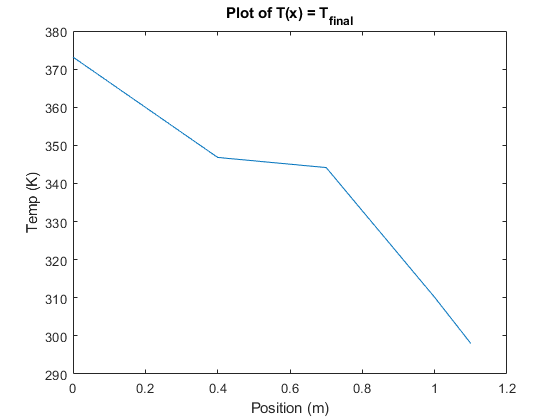

G_u = 27.6 * (0.01^2/0.1);
G_al = 205 * (0.01^2/0.1);
G_fe = 16 * (0.01^2/0.1);
G_inf = 150 * 0.01^2;
G = [2*G_u -G_u 0 0 0 0 0 0 0 0;
-G_u 2*G_u -G_u 0 0 0 0 0 0 0;
0 -G_u 2*G_u -G_u 0 0 0 0 0 0;
0 0 -G_u (G_u+G_al) -G_al 0 0 0 0 0;
0 0 0 -G_al 2*G_al -G_al 0 0 0 0;
0 0 0 0 -G_al 2*G_al -G_al 0 0 0;
0 0 0 0 0 -G_al (G_al+G_fe) -G_fe 0 0;
0 0 0 0 0 0 -G_fe 2*G_fe -G_fe 0;
0 0 0 0 0 0 0 -G_fe 2*G_fe -G_fe;
0 0 0 0 0 0 0 0 -G_fe (G_fe+G_inf)];
b = [G_u*373.15 0 0 0 0 0 0 0 0 G_inf*298]';
sparse(G);
T_total = G \ b;
T_final = [373.15 T_total' 298]';
x = 0:0.1:1.1;
f1 = figure('Name', 'Figure 1: Plot of T_final');
plot(x,T_final');
xlabel('Position (m)');
ylabel('Temp (K)');
title('Plot of T(x) = T_{final}')
diary vj_problem1.txt
echo
G_u
G_fe
G_al
G_inf
sparse(G)
sparse(b)
T_total
T_final
echo off
diary off
G_u
G_u =
0.0276
G_fe
G_fe =
0.0160
G_al
G_al =
0.2050
G_inf
G_inf =
0.0150
sparse(G)
ans =
(1,1) 0.0552
(2,1) -0.0276
(1,2) -0.0276
(2,2) 0.0552
(3,2) -0.0276
(2,3) -0.0276
(3,3) 0.0552
(4,3) -0.0276
(3,4) -0.0276
(4,4) 0.2326
(5,4) -0.2050
(4,5) -0.2050
(5,5) 0.4100
(6,5) -0.2050
(5,6) -0.2050
(6,6) 0.4100
(7,6) -0.2050
(6,7) -0.2050
(7,7) 0.2210
(8,7) -0.0160
(7,8) -0.0160
(8,8) 0.0320
(9,8) -0.0160
(8,9) -0.0160
(9,9) 0.0320
(10,9) -0.0160
(9,10) -0.0160
(10,10) 0.0310
sparse(b)
ans =
(1,1) 10.2989
(10,1) 4.4700
T_total
T_total =
366.5688
359.9876
353.4064
346.8252
345.9392
345.0531
344.1671
332.8145
321.4620
310.1094
T_final
T_final =
373.1500
366.5688
359.9876
353.4064
346.8252
345.9392
345.0531
344.1671
332.8145
321.4620
310.1094
298.0000
echo off
